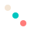

Forms and Properties can be vectorized
Often one needs to produce many copies of a similar shape. Most of the forms an properties have a scalar and vector forms to simplify this sort of mass production.
We'll use circle as an example, which has two constructors:
circle(x=0.5w, y=0.5h, r=0.5w)
circle(xs::AbstractArray, ys::AbstractArray, rs::AbstractArray)The first of these creates only circle centered at (x, y) with radius r. The second form can succinctly create many circles (using the Colors package to specify the LHCab colorspace):
composition = compose(context(),
circle([0.25, 0.5, 0.75], [0.25, 0.5, 0.75], [0.1, 0.1, 0.1]),
fill(LCHab(92, 10, 77)))
draw(SVG("circles.svg", 4cm, 4cm), composition)
The arrays in passed to xs, ys, and rs need not be the same length. Shorter arrays will be cycled. This let's us shorten this last example by only specifying the radius just once.
composition = compose(context(),
circle([0.25, 0.5, 0.75], [0.25, 0.5, 0.75], [0.1]),
fill(LCHab(92, 10, 77)))
draw(SVG("cycled_circles.svg", 4cm, 4cm), composition)The fill is a property can also be vectorized here to quickly assign different colors to each circle.
circles_fill_vectorized = compose(context(),
circle([0.25, 0.5, 0.75], [0.25, 0.5, 0.75], [0.1]),
fill([LCHab(92, 10, 77), LCHab(68, 74, 192), LCHab(78, 84, 29)]))
draw(SVG("circles_fill_vectorized.svg", 4cm, 4cm), circles_fill_vectorized)
If vector properties are used with vector forms, they must be of equal length.